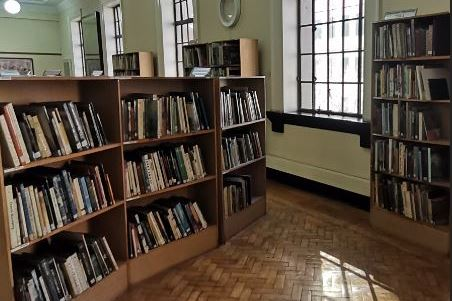
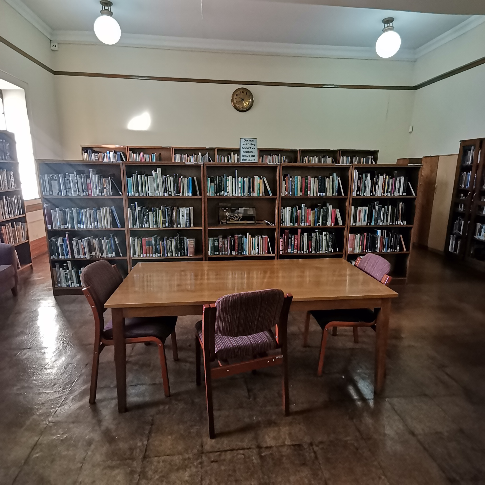
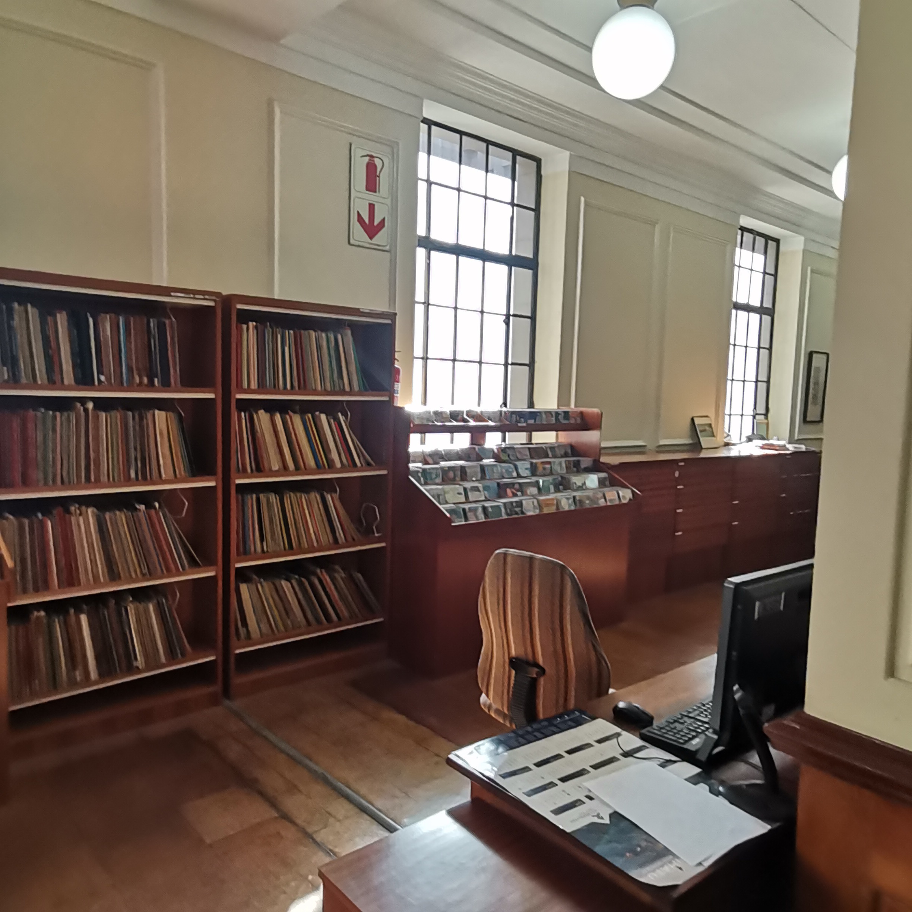

Tshepisong Library
5903 Tshepisong Multipurpose Centre
Tshepisong Phase 4

Operating Hours
- Mon-Thurs09:00-16:00
- Fridays09:00-16:00
- SaturdaysClosed
Tshepisong Library
Tshepisong Library keeps pace with modern technology and the changing role of libraries by offering computer classes, to enable young and older adults to stay engaged in a digital world. Our library has computers with internet for public use. The library is safe place for kids when schools are closed. We offer after school homework asistance, games and book clubs for all patrons. There are outreach programs to keep those living in remote areas or those who are homebound connected to the larger community.
- Department Johannesburg Library And Information Services
- Location 5903 Tshepisong Multipurpose Centre, phase 4 Tshepisong
- Email enquiries@cojelearning.org.za
- Phone (011) 765 4005
- Head Bulelwa Mafanya


